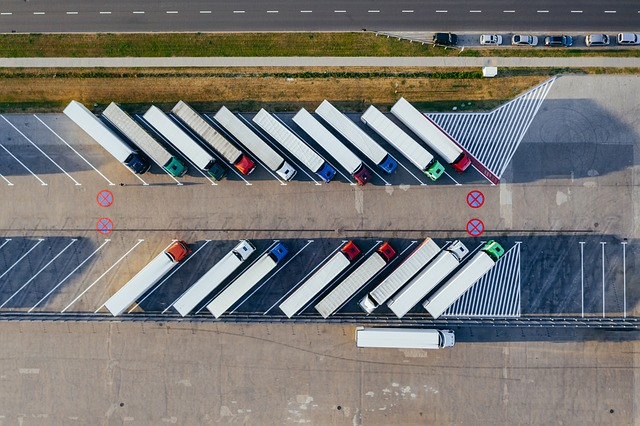

Nos dedicamos --
A brindar un servicio de rastreo satelital logistico con el cual el usuario podra obtener en primera medida informacion en tiempo real de la ubicacion, visualizacion en mapa, velocidad, kilometros recorridos, estado de motor y consumo estimado de combustible, entre otras funciones. optimizando el control y gestion del vehiculo.
Lo realizamos --
A traves de nuestros equipos instalables los cuales interactuan con la red satelital gps para obtener ubicacion, a la vez adjuntando informacion de sus perifericos y enviando estos datos mediante la red celular hacia la plataforma Datatruck

